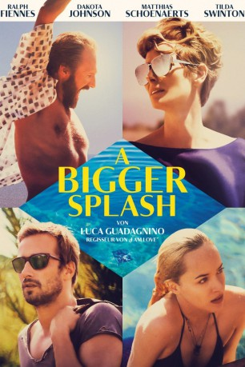

#4337 A Bigger Splash
 
 IMDB-Wertung: 6.3 / 10
IMDB-Wertung: 6.3 / 10  Metascore: 0
Metascore: 0 
Filmemacher Paul möchte mit seiner Freundin, dem Rockstar Marianne einen romantischen Erholungsurlaub auf der paradiesischen italienischen Insel Pantelleria verbringen. Doch schon wenige Tage nach ihrer Ankunft wird die friedliche Zweisamkeit durch den unerwarteten Besuch ihres alten Freundes Harry und seiner erwachsenen Tochter Penelope gestört. Schnell fühlt sich Paul zur attraktiven Penelope hingezogen, gleichzeitig entflammt aber auch zwischen Harry und Marianne die bereits in der Vergangenheit verspürte gegenseitige Anziehung aufs Neue. Nach und nach geraten alle vier in einen verhängnisvollen Strudel aus Eifersucht, Leidenschaft und sexueller Besessenheit...
Jahr: 2015
Dauer: 124 Minuten
FSK: 12
Land: Italien Studio: StudioCanalTonspuren: DTS - ,
Untertitel: Deutsch,
Auflösung: 1080p (1920x1040) Größe: 10219 MB
Genre: Krimi, Drama, Thriller
Regisseur: Luca Guadagnino
Drehbuch: Hironobu Sakaguchi
Soundtrack:
Darsteller:
 Tilda Swinton als Marianne Lane
Tilda Swinton als Marianne Lane Matthias Schoenaerts als Paul De Smedt
Matthias Schoenaerts als Paul De Smedt Ralph Fiennes als Harry Hawkes
Ralph Fiennes als Harry Hawkes Dakota Johnson als Penelope Lannier
Dakota Johnson als Penelope Lannier Aurore Clément als Mireille
Aurore Clément als Mireille- Lily McMenamy als Sylvie
- Corrado Guzzanti als Maresciallo
- Alessandro Ferrara als Carabiniere 1
- David Maddalena als Carabiniere 2
- Salvatore Gabriele als Mayor
- Livio Franco Blandino als Restaurant Owner
- Vito Rodo als Waiter
- Elena Bucci als Clara
- Tom Stickley als Drummer
- Jerry Popiel als Guitarist
- Taketo Gohara als Sound Engineer
- Salvatore Cipri als Priest
- Francesca Faccilongo als Girl at San Gaetano's Festival
- Giuseppe Spata als Entertainer
- Francesco Leone als Boy at San Gaetano's Festival
- Antonino Bonomo als Karaoke Bar Owner
- Giampiero La Cerra als Karaoke Bar Client
- Giafar Abdallah als Mohammed Abdullahi
- Mahammedin Mahammed Ibrahim als Majdi Ahkdar
- Francesco Lo Pinto als Masse Ndaye
- Youness Zrhaiba als Moussa Dlabouga
- Vito Giuseppe Rodo als Giuseppe
- Rosa Rodo als Rosa
- Tamara Rodo als Tamara
- Giovanni Pineda als Villa's Gardener
- Antonio Simone Farina als Carabiniere 3
- Fausto Amato als Notary
Datei: X:\2015(A-F)\Bigger Splash, A (2015, FSK12, 1920x1040).mkv seit 12.09.2016
Festplatte: HD 2015(A-Z)
 Es gibt insgesamt 143 Filme in der Gruppe '2015(A-F)'
Es gibt insgesamt 143 Filme in der Gruppe '2015(A-F)'